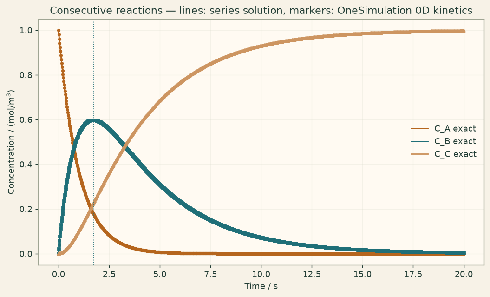

Docs › Examples › Consecutive reactions A to B to C
Reaction kinetics · 0D
Consecutive reactions A to B to C
A reaction chain A to B to C; the intermediate peak is graded against the series solution.

What it computes
OneSimulation integrates the two sequential mass-action reactions in time on a homogeneous (0D) network.
What it checks
The intermediate peak height and time match the closed-form series solution, with mass conserved.
The notebook
The complete notebook, cell by cell. Run it to produce the figures and the comparison printout.
A species \(A\) reacts to an intermediate \(B\), which in turn reacts to a final product \(C\), in a homogeneous, well-mixed (0D) batch reactor:
With first-order (mass-action) rate laws the homogeneous balances are
with \(C_A(0)=C_{A0}\), \(C_B(0)=C_C(0)=0\). OneSimulation integrates the network on a lumped (0D) domain with an explicit classical Runge-Kutta scheme.
Reference. For \(k_1\neq k_2\) the classical closed-form solution is
The intermediate \(C_B\) reaches a maximum at \(t_{\max}=\dfrac{\ln(k_2/k_1)}{k_2-k_1}\). We compare the transient and the peak.
from importlib.metadata import version
import numpy as np
import matplotlib.pyplot as plt
from onesim.cad.geometry import LumpedDomain
from onesim.meshing import LumpedMesh
from onesim.numerics import Numerics
from onesim.numerics.discretization import LumpedParameters
from onesim.numerics.time import ClassicalRungeKutta4
from onesim.physics.chemistry import (
ReactionIR,
ReactionKinetics,
ReactionNetworkIR,
SpeciesIR,
)
from onesim.simulation import Problem, Simulation
from onesim.simulation.initial_conditions import InitialValue
print("OneSimulation:", version("onesimulation"))Parameters
The values are freely adjustable. With \(k_1\) and \(k_2\) of different size the intermediate \(B\) builds up and then decays, giving a clear interior peak.
k1 = 1.0 # 1/s, rate coefficient A -> B
k2 = 0.3 # 1/s, rate coefficient B -> C
C_A0 = 1.0 # mol/m^3, initial concentration of A
t_peak = np.log(k2 / k1) / (k2 - k1)
end_time = 6.0 / min(k1, k2)
time_step = 0.02 / max(k1, k2)
print(f"k1 = {k1:.3f} 1/s, k2 = {k2:.3f} 1/s, intermediate peak at t = {t_peak:.3f} s")Model
Three species (\(A\), \(B\), \(C\)) and two irreversible reactions with constant rate coefficients, in a single lumped control volume.
network = ReactionNetworkIR(
"consecutive_chain",
"1",
species=(
SpeciesIR("A", 0, 1e-27, composition={"H": 1}),
SpeciesIR("B", 0, 1e-27, composition={"H": 1}),
SpeciesIR("C", 0, 1e-27, composition={"H": 1}),
),
reactions=(
ReactionIR("step1", {"A": 1}, {"B": 1}, {"kind": "constant", "value": k1}),
ReactionIR("step2", {"B": 1}, {"C": 1}, {"kind": "constant", "value": k2}),
),
strict_balance=True,
)
domain = LumpedDomain()
model = ReactionKinetics(domain=domain.system, temperature=300.0, network=network)
C_A = model.concentration("A")
C_B = model.concentration("B")
C_C = model.concentration("C")
problem = Problem(
name="Consecutive reactions",
geometry=domain,
physics=(model,),
initial_conditions=(
InitialValue(C_A, C_A0),
InitialValue(C_B, 0.0),
InitialValue(C_C, 0.0),
),
)
simulation = Simulation(
problem=problem,
mesh=LumpedMesh(domain),
numerics=Numerics(
spatial=LumpedParameters(),
time_integrator=ClassicalRungeKutta4(),
),
)
simulation.validate().require_valid()
result = simulation.run(start_time=0.0, end_time=end_time, time_step=time_step)Comparison with the series solution
The stored concentration histories are compared, time by time, with the closed-form solution, and the intermediate peak is compared with its analytic height and position.
def series(field):
history = result.field(field).history
times = np.asarray(history["times"], dtype=float)
values = np.asarray([value[0] for value in history["values"]], dtype=float)
return times, values
times, num_A = series(C_A)
_, num_B = series(C_B)
_, num_C = series(C_C)
exact_A = C_A0 * np.exp(-k1 * times)
exact_B = C_A0 * k1 / (k2 - k1) * (np.exp(-k1 * times) - np.exp(-k2 * times))
exact_C = C_A0 - exact_A - exact_B
err = max(
float(np.max(np.abs(num_A - exact_A))),
float(np.max(np.abs(num_B - exact_B))),
float(np.max(np.abs(num_C - exact_C))),
)
rel_error = err / C_A0
print(f"Maximum absolute error against the series: {err:.3e} mol/m^3"
f" ({100 * rel_error:.4f} % of C_A0)")
assert rel_error < 1e-3, "Deviation larger than the example tolerance (0.1 % of C_A0)."
# Intermediate peak: analytic height and position.
B_peak_exact = C_A0 * (k1 / k2) ** (k2 / (k2 - k1))
i_peak = int(np.argmax(num_B))
print(f"intermediate peak: numeric C_B_max = {num_B[i_peak]:.5f} at t = {times[i_peak]:.3f} s,"
f" analytic C_B_max = {B_peak_exact:.5f} at t = {t_peak:.3f} s")
assert abs(num_B[i_peak] - B_peak_exact) < 1e-3 * C_A0, "Peak height should match the analytic value."
assert abs(times[i_peak] - t_peak) < 2.0 * (time_step), "Peak position should match within a time step."
# Physical sanity: total mass conserved throughout.
mass_error = float(np.max(np.abs(num_A + num_B + num_C - C_A0)))
print(f"Maximum mass-balance error C_A+C_B+C_C-C_A0: {mass_error:.3e} mol/m^3")
assert mass_error < 1e-9, "The total concentration should stay constant."Figure
cream = "#fbf5eb"
fig, ax = plt.subplots(figsize=(8, 4.8), constrained_layout=True)
fig.patch.set_facecolor(cream)
ax.set_facecolor("#fffaf2")
t_fine = np.linspace(0.0, end_time, 400)
fine_A = C_A0 * np.exp(-k1 * t_fine)
fine_B = C_A0 * k1 / (k2 - k1) * (np.exp(-k1 * t_fine) - np.exp(-k2 * t_fine))
fine_C = C_A0 - fine_A - fine_B
ax.plot(t_fine, fine_A, color="#b5651d", lw=1.6, label="C_A exact")
ax.plot(t_fine, fine_B, color="#1f6f78", lw=1.6, label="C_B exact")
ax.plot(t_fine, fine_C, color="#6a4c93", lw=1.6, label="C_C exact")
ax.plot(times, num_A, "o", color="#b5651d", ms=3)
ax.plot(times, num_B, "s", color="#1f6f78", ms=3)
ax.plot(times, num_C, "^", color="#6a4c93", ms=3)
ax.axvline(t_peak, color="#1f6f78", ls=":", lw=1.0)
ax.set(xlabel="Time / s", ylabel="Concentration / (mol/m$^3$)",
title="Consecutive reactions — lines: series solution, markers: OneSimulation 0D kinetics")
ax.grid(alpha=0.25)
ax.legend(frameon=False)
plt.show()Going further
Bring \(k_2\) close to \(k_1\) and watch the intermediate peak grow and move later; at \(k_2=k_1\) the series solution switches to its \(t\,e^{-kt}\) form. Make \(k_2\) much larger than \(k_1\) to approach the quasi-steady-state limit in which \(B\) stays small and \(C\) follows \(A\)'s decay directly.